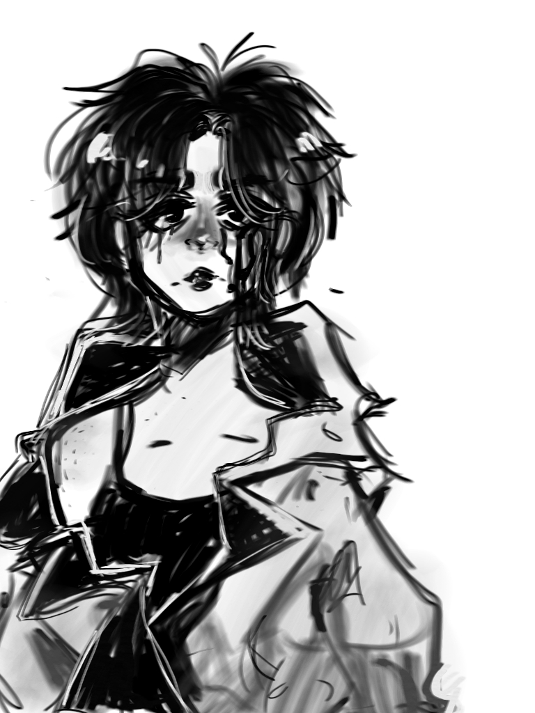
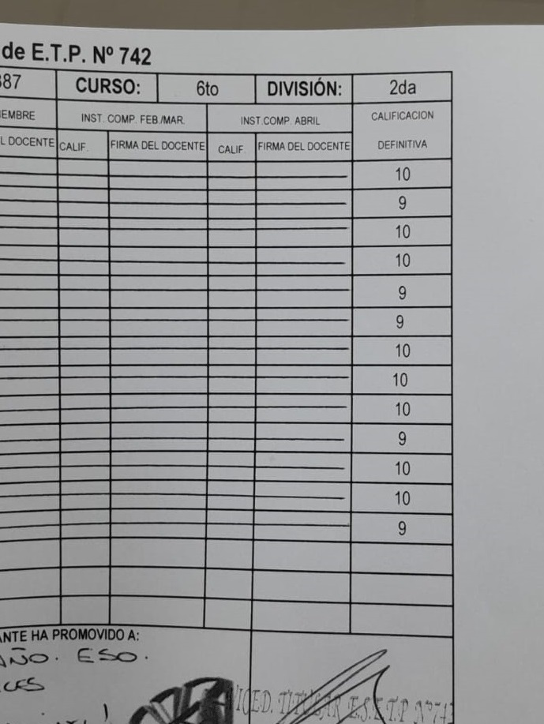
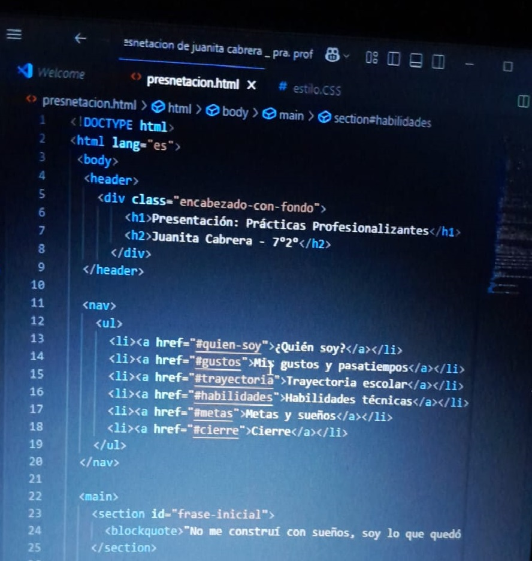
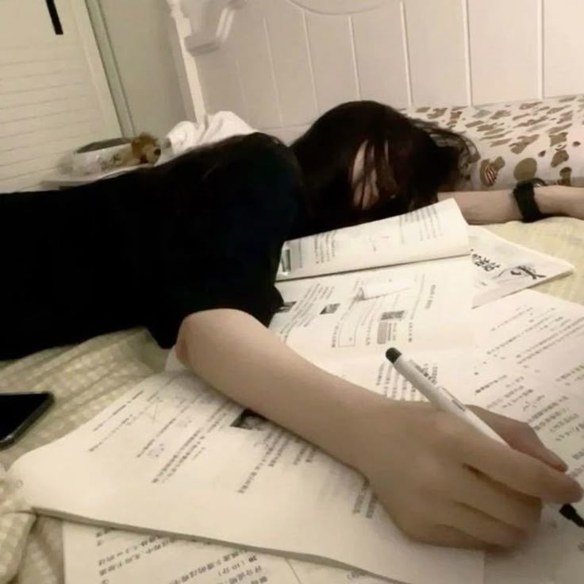

¡Bienvenidos!

Hola, me alegra que estés acá. Esta es una pequeña presentación sobre mí, pensada para que puedas conocerme un poco mejor: quién soy, qué me inspira, y cómo veo el mundo.
A veces las palabras no alcanzan para mostrar todo lo que uno siente o piensa, pero esta página intenta ser un reflejo honesto de mi esencia. Ojalá encuentres algo que te haga sonreír o que te deje pensando.
Gracias por darte el tiempo de estar acá. 🌸
¿Quién soy?
.jpeg)
Juanita Cabrera, 18 años, vive en Estándar Norte, km 8, con su familia. Pero donde realmente se encuentra es en su cabeza, un lugar que a veces es todo menos tranquilo. Es curiosa, pero también le cuesta salir de su zona de confort. Su timidez e introversión son barreras que la frenan, pero sigue buscando respuestas a lo que no entiende. Es muy autoexigida, a veces demasiado, y puede hacer varias cosas al mismo tiempo, aunque no siempre de la manera que le gustaría ni con el control que espera. Le gusta ayudar, pero a menudo siente que lo que da no se devuelve, lo que la deja con esa sensación de invisibilidad. Aunque las opiniones ajenas no definen quién es, sí la afectan, al menos un poco. No pretende ser perfecta ni ser un ejemplo para otros; está en un proceso de encontrarse a sí misma, y a veces tiene claro quién es y otras veces se siente perdida. La soledad a veces le da claridad, pero otras veces la consume, y en esa lucha constante, sigue adelante, aprendiendo a lidiar con su propio caos. No es alguien que esté completamente superada, pero no necesita serlo para seguir adelante.
Mis gustos y pasatiempos
Juanita busca encontrar su lugar entre el caos de sus pensamientos. Suele salir a caminar o hacer ejercicio cuando siente que necesita despejar su mente. También le gusta dibujar, aunque no siempre tiene la paciencia de terminar lo que empieza. La música es una compañía constante para ella, una forma de desconectarse de todo lo demás. Además, le atrae leer y escuchar podcasts sobre casos forenses y sociología. Le interesa entender por qué las personas actúan de la manera en que lo hacen, especialmente en situaciones extremas, algo que tal vez tiene que ver con su propia necesidad de comprender la mente humana. También siente una inclinación por la psicología, aunque no se considera una experta, sino alguien que busca entender más sobre cómo funciona la mente. En su tiempo libre, realiza voluntariado con un grupo de jóvenes en una capilla. No lo hace con la expectativa de que todo se le reconozca, pero le gusta poder dar una mano cuando puede. A veces siente que la gente no la valora tanto como ella gustaría, y eso la afecta, pero sigue adelante. Su tecnicatura en informática también es una parte importante de su vida. Si bien no siempre tiene el control sobre todo lo que aprende, está comprometida a mejorar y a seguir avanzando a su ritmo.
Trayectoria escolar
Juanita siempre fue una persona aplicada en lo académico; nunca le costó demasiado cumplir con las tareas ni obtener buenos resultados. Sin embargo, sus actitudes personales no siempre acompañaron ese esfuerzo. Con el paso de los años, fue puliendo algunos aspectos de su forma de ser, no por obligación, sino porque entendió que el cambio era parte de crecer. Cursó su primaria en la Escuela N°171 "Carreros Patagónicos", y actualmente está finalizando la secundaria en la Escuela Técnica Profesionalizante N°742. Más que ver esta etapa como un logro perfecto, la ve como un proceso lleno de imperfecciones, donde el verdadero mérito fue mantenerse de pie hasta el final.
Habilidades técnicas
Juanita, a lo largo de su formación técnica, desarrolló una base sólida en el uso de herramientas informáticas esenciales. Maneja programas de ofimática como Word, Excel y PowerPoint de forma eficiente, sabiendo darles un toque organizado y prolijo cuando el contexto lo requiere. Tiene también nociones de diseño en Canva, y sabe construir presentaciones y documentos que no solo cumplen su función, sino que transmiten una estética cuidada. En programación, dio sus primeros pasos utilizando Visual Studio Code y familiarizándose con Java, entendiendo la lógica y estructura básica de los lenguajes, aunque reconoce que aún se siente en proceso de afianzar esos conocimientos. Además, posee una noción base sobre redes informáticas: comprende su estructura general, conceptos de conectividad, cableados y la dinámica de una red LAN sencilla. Aunque a veces duda de sus propias capacidades, tiene una virtud difícil de enseñar: la perseverancia. Cuando algo le interesa o la desafía de verdad, no se queda con la primera respuesta, sino que investiga, pregunta y se obliga a entender más allá de lo superficial. Sabe que su recorrido apenas empieza, pero también tiene claro que no le falta voluntad para seguir creciendo.
Metas
Juanita no tiene todas las respuestas, y tampoco pretende tenerlas. A veces duda, a veces se cuestiona si el camino que imagina será el correcto. Sin embargo, hay algo que sí tiene claro: quiere construir una vida que se sienta suya. Le atrae profundamente la mente humana y todo lo que implica: sus luces, sus sombras, sus laberintos. Sueña con estudiar psicología o psiquiatría, buscando no solo comprender a los demás, sino también seguir entendiéndose a sí misma en el proceso. Sabe que sanar y ayudar a otros es también, en parte, una forma de reconstruirse a sí misma. También le gustaría seguir explorando el mundo de la tecnología, perfeccionándose en informática, porque entiende que el conocimiento puede ser una herramienta para abrir puertas hacia otros caminos posibles. No se imagina una vida perfecta. Más bien se imagina una vida tranquila, rodeada de verde, lejos del ruido innecesario, compartida con pocos pero verdaderos afectos. Se imagina en paz consigo misma, aunque también sabe que esa paz no llega de un día para otro: se construye, se pelea, se elige todos los días. Su meta, en el fondo, no es ser la mejor ni llegar más rápido que nadie. Su meta es no rendirse y hacer que su vida tenga sentido, a su manera.
Cierre
Gracias por haber recorrido esta página. Ojalá te haya dejado una idea más clara de quién soy y hacia dónde me gustaría ir. No hay caminos perfectos, pero sí pasos que se dan con el corazón.
🌱 Juanita Cabrera 🌱